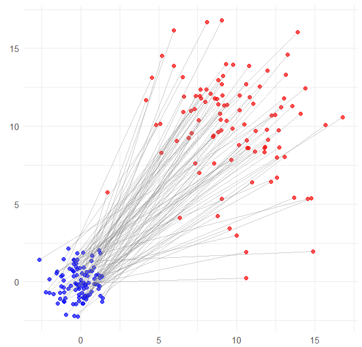
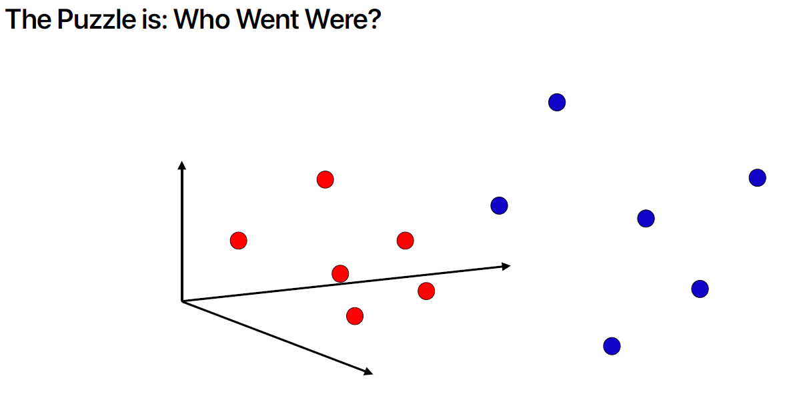
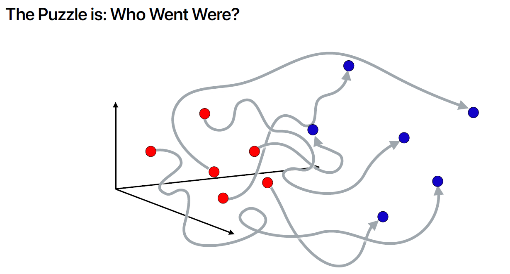
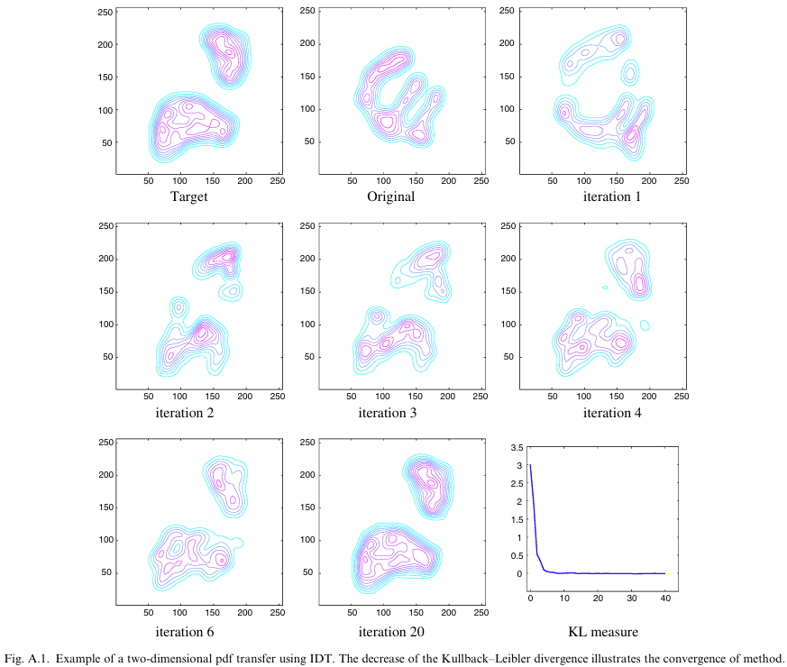
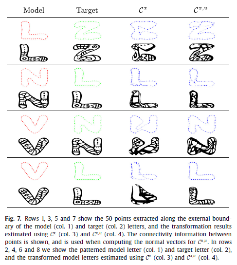
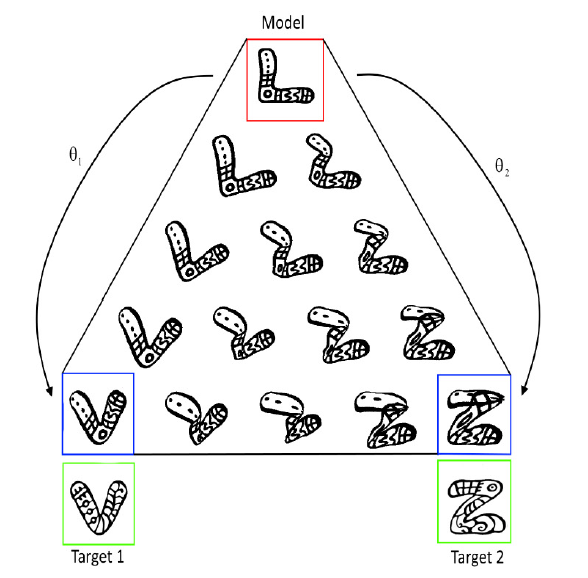
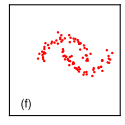
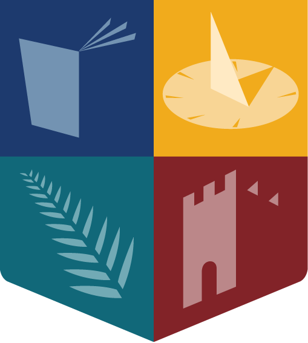

mindmap
root((Deep Learning</br> CS636))
Graph Neural Networks
Graphs convolutional networks
Convolutional Neural Network
Transformers
ViT
Self Supervised Learning
Contrastive Learning
CLIP
ImageBind
Generative models
Normalising Flows
Generative Adversarial Networks
Diffusion Models
Variational AutoEncoder
Generative Models
Maynooth University Maths & Stats Colloquias
Rozenn Dahyot
2026-03-11
Introduction
(CS636 course book: Deep Learning - Foundations and Concepts, Bishop and Bishop 2024)
Introduction
Supervised Learning: with dataset \(\left\lbrace \left(\color{blue}{\mathbf{x}^{(i)}},\color{red}{\mathbf{y}^{(i)}}\right)\right\rbrace_{i=1,\cdots,N}\) having \(N\) example pairs, find best parameter \(\theta\) and hyperparameters \(\mathcal{H}\) to tune the machine \[ \mathcal{M}_{\theta,\mathcal{H}}(\color{blue}{\mathbf{x}}) = \hat{\mathbf{y}} \] by
estimating the parameter \(\hat{\theta}\) minimizing a loss e.g.: \[ \mathbb{E}\lbrack\mathcal{L}(\hat{\mathbf{y}},\mathbf{y}) \rbrack \simeq \frac{1}{N} \sum_{i=1}^N \mathcal{L}(\hat{\mathbf{y}}^{(i)},\color{red}{\mathbf{y}^{(i)}}) \]
choosing best hyperparameters \(\mathcal{H}\)

Introduction
Self Supervised Learning: with dataset \(\left\lbrace \mathbf{x}^{(i)}\right\rbrace_{i=1,\cdots,N}\), create dataset \(\left\lbrace \left(\color{blue}{\tilde{\mathbf{x}}^{(i)}} , \color{red}{\mathbf{x}^{(i)}}\right)\right\rbrace_{i=1,\cdots,N}\) with \(\tilde{\mathbf{x}}\) same or noisy version of \(\mathbf{x}\), and then tune the autoencoder machine:
\[ \mathcal{M}_{\theta,\mathcal{H}}(\color{blue}{\tilde{\mathbf{x}}}) = \hat{\mathbf{x}} \]
estimating the parameter \(\hat{\theta}\) minimizing a loss e.g.: \[ \mathbb{E}\lbrack\mathcal{L}(\hat{\mathbf{y}},\mathbf{y}) \rbrack \simeq \frac{1}{N} \sum_{i=1}^N \mathcal{L}(\hat{\mathbf{x}}^{(i)},\color{red}{\mathbf{x}^{(i)}}) \]
choosing best hyperparameters \(\mathcal{H}\)
Introduction
Self Supervised Learning with contrastive learning: with dataset \(\left\lbrace \mathbf{x}^{(i)}\right\rbrace_{i=1,\cdots,N}\), create dataset of \(\color{blue}{\text{positive}}\) and \(\color{red}{\text{negative}}\) pairs \(\left\lbrace \color{blue}{\left(\mathbf{x}^{(i)},\tilde{\mathbf{x}}^{(i)}\right)^{+}}, \color{red}{\left(\mathbf{x}^{(i)},\mathbf{x}^{(j)}\right)^{-}} \right\rbrace_{i\neq j}\) with \(\tilde{\mathbf{x}}^{(i)}\) a transformed version of the anchor \(\mathbf{x}^{(i)}\): \[ \left\lbrace \begin{array}{l} \mathcal{M}_{\theta,\mathcal{H}}(\color{blue}{\tilde{\mathbf{x}}^{(i)}}) = \hat{\tilde{\mathbf{y}}}^{(i)} \\ \mathcal{M}_{\theta,\mathcal{H}}(\color{blue}{\mathbf{x}^{(i)}}) = \hat{\mathbf{y}}^{(i)}\\ \mathcal{M}_{\theta,\mathcal{H}}(\color{red}{\mathbf{x}^{(j)}}) = \hat{\mathbf{y}}^{(j)}\\ \end{array} \right. \] The contrastive loss to estimate \(\theta\), forces the positive pair of outputs (embeddings) \(\hat{\tilde{\mathbf{y}}}^{(i)}\) and \(\hat{\mathbf{y}}^{(i)}\) to be close to each other, while negative pairs of outputs, i.e. embeddings from different samples \(\hat{\mathbf{y}}^{(i)}\) and \(\hat{\mathbf{y}}^{(j)}\) with \(i \neq j\), repel each other.
Introduction
Generative (machine) Learning: with dataset \(\left\lbrace \mathbf{x}^{(i)}\right\rbrace_{i=1,\cdots,N}\), create a pair of datasets
\[ \left( \color{blue}{\left\lbrace \mathbf{z}^{(j)}\right\rbrace_{j=1,\cdots,N}} ; \color{red}{\left\lbrace \mathbf{x}^{(i)}\right\rbrace_{i=1,\cdots,N}}\right) \]
with \(\mathbf{z} \sim p_{\mathbf{z}}(\mathbf{z})\) a simple distribution easy to sample from (e.g. Gaussian).
The generative machine is computing: \[ \mathcal{M}_{\theta,\mathcal{H}}(\mathbf{z})=\hat{\mathbf{x}} \] The parameter \(\theta\) is tuned to minimise a divergence between the distribution of \(\hat{\mathbf{x}}\sim p_{\hat{\mathbf{x}}}(\hat{\mathbf{x}})\) and the true distribution of \(\mathbf{x}\sim p_{\mathbf{x}}(\mathbf{x})\).


General Formulation
Consider a r. v. \(\mathbf{z}\sim p_{\mathbf{z}}(\mathbf{z})\), and invertible functions \(f\) and \(g\) such that:
\[ \mathbf{x}=g(\mathbf{z}) \quad \text{and} \quad \mathbf{z}=f(\mathbf{x}) \]
then \[ p_{\mathbf{z}}(\mathbf{z}) = \color{red}{p_{\mathbf{x}}}(g(\mathbf{z})) \ |\det \mathcal{J}(\mathbf{z}) | \quad \color{red}{(\text{not known})} \]
\[ p_{\mathbf{x}}(\mathbf{x}) = \color{green}{p_{\mathbf{z}}}(f(\mathbf{x})) \ |\det J(\mathbf{x}) | \quad \color{green}{(\text{known})} \] with \(J\) the Jacobian matrix with \(J_{ij}=\frac{\partial z_i}{\partial x_j}\).
Using a dataset \(\lbrace \mathbf{x}^{(i)} \rbrace_{i=1,\cdots,N}\), we aim at finding an invertible learnable function \(f\) that maximizes: \[
\log \text{likelihood}= \sum_i \log \color{green}{p_{\mathbf{z}}}(f(\mathbf{x}^{(i)}))+ \log |\det J(\mathbf{x}^{(i)})|
\]
1D Case
When \(\dim(x)=\dim(z)=1\) \[ p_{x}(x)=p_z(f(x)) \ f'(x) \] and \[ P_{x}(x)=P_z(f(x)) \] leading to the 1D solutions: \[ f(x)=P_z^{-1} \circ P_x(x) \] and \[ g(z)=P_x^{-1} \circ P_z(z) \]
Animation from https://reservoirswd.github.io (Boss et al. 2025)
1D Case
Applications:
Histogram equalization: if \(z\sim\mathcal{U}([0,1])\), then \(f(x)=P_x(x)\) maps an intensity pixel \(x\in [0;1]\) to \(f(x)=z\) that has a uniform distribution (improve contrast).
Flicker removal: with \(z\) pixel intensity of a reference frame, and \(x\) intensity pixel in frame at time \(t\) can be corrected with \(f(x)\).
Flicker reduction in old films (Naranjo and Albiol 2000)
A New Robust Technique for Stabilizing Brightness Fluctuations in Image Sequences (Pitie et al. 2004)
1D Case
% 1D - PDF Transfer - Matlab
% https://github.com/frcs/colour-transfer in pdf_transfer.m
%
function f = pdf_transfer1D(pX,pY)
nbins = max(size(pX));
eps = 1e-6; % small damping term that faciliates the inversion
PX = cumsum(pX + eps);
PX = PX/PX(end);
PY = cumsum(pY + eps);
PY = PY/PY(end);
% inversion
f = interp1(PY, 0:nbins-1, PX, 'linear');
f(PX<=PY(1)) = 0;
f(PX>=PY(end)) = nbins-1;
if sum(isnan(f))>0
error('colour_transfer:pdf_transfer:NaN', ...
'pdf_transfer has generated NaN values');
end
end1D solution: \[ f(x)=P_z^{-1} \circ P_x(x) \]
with:
input
pX, histogram as estimate of p.d.f. \(p_x\), andPXc.d.f. \(P_x\)input
pY, histogram as estimate of p.d.f. \(p_z\) andPYc.d.f. \(P_z\)
Iterative Distribution Transfer (IDT)

With \(\mathbf{x},\mathbf{z} \in\mathbb{R}^d\) (\(d=2\)) :
- \(p_{\mathbf{x}}\)
originalp.d.f. - \(p_{\mathbf{z}}\)
targetp.d.f.
- project data along several random directions and compute the 1D solution in each direction.
- the 1D solution provides a \(\delta^u_{\mathbf{x}}\) to move datum \(\mathbf{x}\) in that direction \(\mathbf{u}\). Each datum \(\mathbf{x}\) can be moved \(\mathbf{x}\leftarrow \mathbf{x}+\sum_{u}\delta^u_{\mathbf{x}} \mathbf{u}\)
- This results in a new distribution \(p_x^{(1)}\) shown as
iteration 1
Colour transfer
Example of application:
Animation by G. Peyré
Colour transfer
| Input reference | Target Palette | |

|

|
Colour transfer
| IDT (Pitie, Kokaram, and Dahyot 2007) 💻 | SWD (Bonneel et al. 2014) 💻 | L2 Divergence (Grogan and Dahyot 2019) 💻 |

|
||

|
Comparative results from
L2 Divergence for robust colour transfer (Grogan and Dahyot 2019) 💻 Code
Shape transfer

Sliced and Radon Wasserstein Barycenters of Measures (Bonneel et al. 2014) 💻 Code
Shape transfer


Shape registration with directional data (Grogan and Dahyot 2018)
Summary
IDT algorithm (Pitie, Kokaram, and Dahyot 2007) shows that iterative random 1D projections (linear operation) combined with 1D pdf transfer (non linear operation) can map a distribution onto another. IDT is shown to decrease KL divergence at each iteration.
(Grogan and Dahyot 2019) maps distributions by minimising the L2 divergence between the two distribution and assuming a affine/spline shift for displacing the data points to the target distribution. L2 divergence can be computed explicitly with GMMs and von Mises-Fisher mixtures (for directional data) (Grogan and Dahyot 2018).
As a special case, generative models maps a multidimensional simple p.d.f. (like a Normal distribution for which it is easy to create new samples) onto a more complex multidimensional p.d.f. (data distribution).
Today, generative models are deep neural networks that iteratively move the data to match the target distribution: \[ \mathcal{M}_{\theta,\mathcal{H}}: \mathbf{z}^{(0)} \sim \mathcal{N}(0,\mathrm{I}) \rightarrow \mathbf{z}^{(1)} \rightarrow \cdots \rightarrow \mathbf{z}^{(L)} \sim p_{\mathbf{x}}(\mathbf{x}) \]
Normalizing Flows

|

|

|

|

|
 |
| \(\mathbf{z}^{(0)} \sim \mathcal{N}(0,\mathrm{I})\) | \(\mathbf{z}^{(1)}\) | \(\mathbf{z}^{(2)}\) | \(\mathbf{z}^{(3)}\) | \(\mathbf{z}^{(4)}\) | Dataset \(\lbrace \mathbf{x}^{(i)} \rbrace\) |
| \(\left\lbrack\begin{array}{c} \color{green}{z_1^{(0)}}\\ z_2^{(0)} \end{array}\right\rbrack\) | \(\left\lbrack\begin{array}{c} \color{green}{z_1^{(0)}}\\ \color{blue}{z_2^{(1)}} \end{array}\right\rbrack\) | \(\left\lbrack\begin{array}{c} \color{red}{z_1^{(2)}}\\ \color{blue}{z_2^{(1)}} \end{array}\right\rbrack\) | \(\left\lbrack\begin{array}{c} \color{red}{z_1^{(2)}}\\ \color{brown}{z_2^{(3)}} \end{array}\right\rbrack\) | \(\left\lbrack\begin{array}{c} z_1^{(4)}\\ \color{brown}{z_2^{(3)}} \end{array}\right\rbrack\) |
Only part of the tensor is updated at each step whereas the other part is copied. The coordinate that changes is updated by a linear transformation e.g. \(z_2^{(1)}=\alpha\ z_2^{(0)}+\beta\)
such that \(\alpha=\exp(a(z_1^{(0)}, \theta_a))\) and \(\beta=b(z_1^{(0)},\theta_b)\) with \((a,b)\) learnable neural networks using \(z_1^{(0)}\) as input (the coordinate that remains the same). This transformation is invertible at every step!
(Coupling flows, Fig. 18.3, Bishop and Bishop 2024)
Normalizing Flows
A generative machine can be designed with \(L\) layers \(\mathcal{L}\) \[
\mathbf{z}^{(0)}=\mathbf{z}\sim \mathcal{N}(0,\mathrm{I}) \longrightarrow \mathbf{z}^{(1)}=\mathcal{L}_{\theta_1,\mathcal{H}}(\mathbf{z}^{(0)}) \longrightarrow \cdots \longrightarrow \mathbf{z}^{(L)}=\mathcal{L}_{\theta_{L},\mathcal{H}}(\mathbf{z}^{(L-1)}) \sim p_{\mathbf{x}}(\mathbf{x})
\] and the generator is: \[
g(\mathbf{z})\simeq\mathcal{L}_{\theta_L,\mathcal{H}}\circ \mathcal{L}_{\theta_{L-1},\mathcal{H}} \circ \cdots \mathcal{L}_{\theta_{1},\mathcal{H}}
\] with the inverse: \[
f(\mathbf{x})\simeq \mathcal{L}_{\theta_1,\mathcal{H}}^{-1} \circ \mathcal{L}_{\theta_2,\mathcal{H}}^{-1}\circ \cdots \circ \mathcal{L}_{\theta_L,\mathcal{H}}^{-1}(\mathbf{x})
\]
Using a dataset \(\lbrace \mathbf{x}^{(i)} \rbrace_{i=1,\cdots,N}\), we aim at finding an invertible learnable function \(f\) (estimate \(\theta\)s) that maximizes: \[
\log \text{likelihood}= \sum_i \log \color{green}{p_{\mathbf{z}}}(f(\mathbf{x}^{(i)}))+ \log |\det J(\mathbf{x}^{(i)})|
\]
(Coupling flows, Fig. 18.3, Bishop and Bishop 2024)
Normalizing Flows
Continuous Normalizing Flows (18.3, Bishop and Bishop 2024)
Other sources
Optimal Transport in Learning, Control, and Dynamical Systems, ICML 2023 tutorial
Generative Modeling via Drifting (Arxiv 2026, Deng et al. 2026)

References
Baptista, Anthony, Alessandro Barp, Tapabrata Chakraborti, Chris Harbron, Ben D. MacArthur, and Christopher R. S. Banerji. 2024. “Deep Learning as Ricci Flow.” Scientific Reports 14 (1). https://doi.org/10.1038/s41598-024-74045-9.
Bishop, Christopher M., and Hugh Bishop. 2024. Deep Learning: Foundations and Concepts. Springer International Publishing. https://doi.org/10.1007/978-3-031-45468-4.
Bonneel, Nicolas, Julien Rabin, Gabriel Peyré, and Hanspeter Pfister. 2014. “Sliced and Radon Wasserstein Barycenters of Measures.” Journal of Mathematical Imaging and Vision 51 (1): 22–45. https://doi.org/10.1007/s10851-014-0506-3.
Boss, Mark, Andreas Engelhardt, Simon Donné, and Varun Jampani. 2025. “ReSWD: ReSTIR’d, Not Shaken. Combining Reservoir Sampling and Sliced Wasserstein Distance for Variance Reduction.” https://arxiv.org/abs/2510.01061.
Deng, Mingyang, He Li, Tianhong Li, Yilun Du, and Kaiming He. 2026. “Generative Modeling via Drifting.” https://arxiv.org/abs/2602.04770.
Gagneux, Anne, Ségolène Martin, Rémi Emonet, Quentin Bertrand, and Mathurin Massias. 2025. “A Visual Dive into Conditional Flow Matching.” In ICLR Blogposts 2025. https://iclr-blogposts.github.io/2025/blog/conditional-flow-matching/.
Grogan, Mairead, and Rozenn Dahyot. 2018. “Shape Registration with Directional Data.” Pattern Recognition 79: 452–66. https://doi.org/10.1016/j.patcog.2018.02.021.
———. 2019. “L2 Divergence for Robust Colour Transfer.” Computer Vision and Image Understanding. https://doi.org/10.1016/j.cviu.2019.02.002.
Naranjo, V., and A. Albiol. 2000. “Flicker Reduction in Old Films.” In Proceedings 2000 International Conference on Image Processing (Cat. No.00CH37101), 2:657–659 vol.2. https://doi.org/10.1109/ICIP.2000.899794.
Pitie, F., R. Dahyot, F. Kelly, and A. Kokaram. 2004. “A New Robust Technique for Stabilizing Brightness Fluctuations in Image Sequences.” In Statistical Methods in Video Processing, edited by Dorin Comaniciu, Rudolf Mester, Kenichi Kanatani, and David Suter, 153–64. Berlin, Heidelberg: Springer Berlin Heidelberg. https://doi.org/10.1007/978-3-540-30212-4{\_}14.
Pitie, F., A. C. Kokaram, and R. Dahyot. 2005. “N-Dimensional Probability Density Function Transfer and Its Application to Color Transfer.” In Tenth IEEE International Conference on Computer Vision (ICCV’05) Volume 1, 2:1434–39. https://doi.org/10.1109/ICCV.2005.166.
———. 2007. “Automated Colour Grading Using Colour Distribution Transfer.” Computer Vision and Image Understanding 107 (1): 123–37. https://doi.org/10.1016/j.cviu.2006.11.011.
